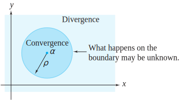
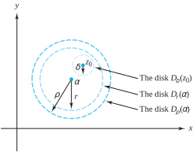

Suppose that we have a series \(\sum\limits_{n=0}^{\infty}\zeta_n\text{,}\) where \(\zeta_n=c_n(z-\alpha )^n\text{.}\) If \(\alpha\) and the collection of \(c_n\) are fixed complex numbers, we get different series by selecting different values for \(z\text{.}\) For example, if \(\alpha =2\) and \(c_n=\frac{1}{n!}\) for all \(n\text{,}\) we get the series \(\sum\limits_{n=0}^{ \infty}\frac{1}{n!}(\frac{i}{2}-2)^n\) if \(z=\frac{i}{2}\) and \(\sum\limits_{n=0}^{\infty}\frac{1}{n!}(2+i)^n\) if \(z=4+i\text{.}\) Note that, when \(\alpha =0\) and \(c_n=1\) for all \(n\text{,}\) we get the geometric series. The collection of points for which the series \(\sum\limits_{n=0}^{ \infty}c_n(z-\alpha )^n\) converges is the domain of a function \(f(z) =\sum\limits_{n=0}^{\infty}c_n(z-\alpha)^n\text{,}\) which we call a power series function. Technically, this series is undefined if \(z=\alpha\) and \(n=0\) because \(0^{0}\) is undefined. We get around this difficulty by stipulating that the series \(\sum\limits_{n=0}^{\infty}c_n(z-\alpha )^n\) is really compact notation for \(c_0+\sum\limits_{n=1}^{\infty}c_n(z-\alpha)^n\text{.}\) In this section we present some results that are useful in helping establish properties of functions defined by power series.
Theorem4.4.1.
Suppose that \(f(z)=\sum\limits_{n=0}^{\infty}c_n(z-\alpha )^n\text{.}\) Then the set of points \(z\) for which the series converges is one of the following:
i.
the single point \(z=\alpha\text{;}\)
ii.
the disk \(D_{\rho}(\alpha ) =\{z:|z-\alpha |\lt \rho \}\text{,}\) along with part (either none, some, or all) of the circle \(C_{\rho}(\alpha ) =\{z:|z-\alpha|=\rho\}\text{;}\)
iii.
the entire complex plane.
Proof.
By Theorem 4.3.15, the series converges absolutely at those values of \(z\) for which \(\lim\limits_{n \to \infty}\sup |c_n(z-\alpha )^n|^{\frac{1}{n}}\lt 1\text{.}\) This condition is the same as requiring
There are three possibilities to consider for the value of \(\lim\limits_{n \to \infty}\sup |c_n|^{\frac{1}{n}}\text{.}\) If the limit supremum equals \(\infty\text{,}\)Inequality (4.4.1) holds iff \(z=\alpha\text{,}\) which is case (i). If \(0\lt \lim\limits_{n \to \infty}\sup |c_n|^{\frac{1}{n}}\lt \infty\text{,}\)Inequality (4.4.1) holds iff \(|z-\alpha |\lt \frac{{1}}{{\lim\limits_{n \to \infty}\sup |c_n|^{\frac{1}{n}}}}\) \Big(i.e., iff \(z\in D_{\rho}(\alpha)\text{,}\) where \(\rho =\frac{{1}}{{\lim\limits_{n \to \infty}\sup |c_n|^{\frac{1}{n}}}}\)\Big) which is case (ii). Finally, if the limit supremum equals 0, the left side of Inequality (4.4.1) will be 0 for any value of \(z\text{,}\) which is case (iii). We are unable to say for sure what happens with respect to convergence on \(C_{\rho}(\alpha ) =\{z:|z-\alpha|= \rho \}\text{.}\) You will see in the exercises that there are various possibilities.
Another way to phrase case (ii) of Theorem 4.4.1 is to say that the power series \(f(z) =\sum\limits_{n=0}^{\infty}c_n(z-\alpha )^n\) converges if \(|z-\alpha|\lt \rho\) and diverges if \(|z-\alpha|>\rho\text{.}\) We call the number \(\rho\) the radius of convergence of the power series (see Figure 4.4.2). For case (i) of Theorem 4.4.1, we say that the radius of convergence is zero and that the radius of convergence is infinity for case (iii).

Figure4.4.2.The radius of convergence of a power series
Theorem4.4.3.
For the power series function \(f(z)=\sum\limits_{n=0}^{\infty}c_n(z-\alpha )^n\) we can find \(\rho\text{,}\) its radius of convergence, by any of the following methods:
d’Alembert’s ratio test: \(\rho =\frac{1}{\lim\limits_{n \to \infty}|\frac{{c_{n+1}}}{{c_n}}|}\) (provided the limit exists).
We set \(\rho =\infty\) if the limit equals 0 and \(\rho =0\) if the limit equals \(\infty\text{.}\)
Proof.
If you examine carefully the proof of Theorem 4.4.1, you will see that we have already proved (i) and (ii). They follow directly from Inequality (4.4.1) and the fact that the limit supremum equals the limit whenever the limit exists. We can show (iii) by using the ratio test. We leave the details as an exercise.
We now give an example illustrating each of these cases.
Example4.4.4.
The series \(\sum\limits_{n=0}^{\infty}(\frac{n+2}{3n+1})^n(z-4)^n\) has radius of convergence 3 by Cauchy ’s root test because \(\lim\limits_{n \to \infty}|c_n|^{\frac{1}{n}}=\lim\limits_{n \to \infty}\frac{n+2}{ 3n+1}=\frac{1}{3}\text{.}\)
Example4.4.5.
The series \(\sum\limits_{n=1}^{\infty}c_nz^n=4z+5^2z^2+4^3z^3+5^4z^4+4^{5}z^{5}+\cdots\) has radius of convergence \(\frac{1}{5}\) by the Cauchy-Hadamard formula because \(\{|c_n|^{\frac{1}{n}}\} =\{ 4,\,5,\,4,\,5,\ldots \}\text{,}\) so \(\lim\limits_{n \to \infty}\sup |c_n|^{\frac{1}{n}}=5\text{.}\)
Example4.4.6.
The series \(\sum\limits_{n=0}^{\infty}\frac{1}{n!}z^n\) has radius of convergence \(\infty\) by the ratio test because \(\lim\limits_{n \to \infty}\left|\frac{n!}{(n+1)!}\right| = \lim\limits_{n \to \infty}\left|\frac{1}{n+1}\right|=0\text{.}\)
We come now to the main result of this section.
Theorem4.4.7.
Suppose that the function\(f(z)=\sum\limits_{n=0}^{\infty}c_n(z-\alpha )^n\) has radius of convergence \(\rho >0\text{.}\) Then
i.
\(f\) is infinitely differentiable for all \(z\in D_{\rho}(\alpha )\text{.}\) In fact
ii.
for all \(k\text{,}\)\(f^{(k)}(z)=\sum\limits_{n=k}^{\infty}n(n-1) \cdots (n-k+1)c_n(z-\alpha )^{n-k}\text{;}\) and
iii.
\(c_k=\frac{f^{(k)}(\alpha )}{k!}\text{,}\) where \(f^{(k)}\) denotes the \(k\)th derivative of \(f\text{.}\) (When \(k=0\text{,}\)\(f^{(k)}\) denotes the function \(f\) itself so that \(f^{(0)}(z) =f(z)\) for all \(z\text{.}\))
Proof.
Remarkably, the entire proof hinges on verifying (ii) for the simple case when \(k=1\text{.}\) The cases in (ii) for \(k\ge 2\) follow by induction. For instance, we get the case when \(k=2\) by applying the result for \(k=1\) to the series \(f\,'(z) =\sum\limits_{n=1}^{\infty}nc_n(z-\alpha )^{n-1}\text{.}\) Also, (i) is an automatic consequence of (ii), because (ii) gives a formula for computing derivatives of all orders in addition to assuring us of their existence. Finally, (iii) follows by setting \(z=\alpha\) in (ii), as all the terms drop out except when \(n=k\text{,}\) giving us \(f^{(k)}(\alpha ) =k(k-1) \cdots (k-k+1) c_k\text{.}\) Solving for \(c_k\) gives the desired result.
Verifying (ii) when \(k=1\text{,}\) however, is no simple task. We begin by defining the following:
Here \(S_j(z)\) is simply the \((j+1)\)st partial sum of the series \(f(z)\text{,}\) and \(R_j(z)\) is the sum of the remaining terms of that series. We leave as an exercise to show that the radius of convergence for \(g(z)\) is \(\rho\text{,}\) the same as that of \(f(z)\text{.}\) For a fixed \(z_0\in D_{\rho}(\alpha)\text{,}\) we must prove that \(f\,'(z_0)=g(z_0)\text{;}\) that is, we must prove that \(\lim_{z \to z_0} \frac{f(z) -f(z_0)}{z-z_0}=g(z_0)\text{.}\) We do so by showing that for all \(\varepsilon>0\) there exists \(\delta >0\) such that, if \(z\in D_{\rho}(\alpha )\) with \(0\lt | z-z_0|\lt \delta\text{,}\) then \(|\frac{f(z) -f(z_0)}{z-z_0}-g(z_0)| \lt \varepsilon\text{.}\)
Let \(z_0\in D_{\rho}(\alpha )\) and \(\varepsilon>0\) be given. Choose \(r\lt \rho\) so that \(z_0\in D_{r}(\alpha)\text{.}\) We choose \(\delta\) to be small enough so that \(D_{\delta}(z_0) \subset D_{r}(\alpha) \subset D_{\rho}(\alpha)\) (see Figure 4.4.8) and also small enough to satisfy an additional restriction, which we shall specify in a moment.

Figure4.4.8.Choosing \(\delta\) to prove that \(f\ '(z_0) =g(z_0)\)
Because \(f(z) =S_j(z) +R_j(z)\text{,}\) simplifying the right side of the following equation reveals that for all \(j\text{,}\)
where \(S_j\,'(z_0)\) is the derivative of the function \(S_j\) evaluated at \(z_0\text{.}\) Equation (4.4.2) has the general form \(A=B+C+D\text{.}\) By the triangle inequality,
so our proof will be complete if we can show that for a small enough value of \(\delta\text{,}\) each of the expressions \(|B|, \, |C|\text{,}\) and \(|D|\) is less than \(\frac{\varepsilon}{3}\text{.}\)
Since \(r\lt \rho\text{,}\) the series \(\sum\limits_{n=1}^{\infty}| c_n|nr^{n-1}\) converges (can you explain why?). Thus the tail part of the series, which is the right side of Inequality (4.4.4), can certainly be made less than \(\frac{\varepsilon}{3}\) if we choose \(j\) large enough—say, \(j\ge N_1\text{.}\)
Calculation for \(\bm|C|\text{:}\)
Since \(S_j\,'(z_0)=\sum\limits_{n=1}^jnc_n(z_0-\alpha )^{n-1}\text{,}\) it is clear that \(\lim_{j \to \infty}S_j\,(z_0) = g(z_0)\text{.}\) Thus there is an integer \(N_2\) such that if \(j \ge N_2\text{,}\) then \(|S_j\,'(z_0) -g(z_0)|\lt \frac{\varepsilon}{3}\text{.}\)
Calculation for \(\bm|B|\text{:}\)
We define \(N=\max \{N_1, N_2\}\text{.}\) Because \(S_N(z)\) is a polynomial, \(S_N\,'(z_0)\) exists. This means we can find \(\delta\) small enough that it complies with the restriction previously placed on it as well as ensuring that
whenever \(z\in D_{\rho}(\alpha)\text{,}\) with \(0\lt |z-z_0|\lt \delta\text{.}\) Using this value of \(N\) for \(j\) in Equation (4.4.2), together with our chosen \(\delta\text{,}\) yields conclusion (ii) and hence the entire theorem.
Example4.4.9.
Show that \(\sum\limits_{n=0}^{\infty}(n+1) z^n=\frac{1}{(1-z)^2}\) for all \(z\in D_1(0)\text{.}\)
Solution.
We know from Theorem 4.3.1 that \(f(z) =\frac{1}{1-z}=\sum\limits_{n=0}^{\infty}z^n\) for all \(z\in D_1(0)\text{.}\) If we set \(k=1\) in Theorem 4.4.7, part (ii), then \(f\,'(z) = \frac{1}{(1-z)^2} = \sum\limits_{n=1}^{\infty}nz^{n-1} = \sum\limits_{n=0}^{\infty}(n+1)z^n\text{,}\) for all \(z \in D_1(0)\text{.}\)
We leave as an exercise to show that the radius of convergence of these series is infinity. The Bessel function \(J_1(z)\) of order 1 is known to satisfy the differential equation \(J_1(z) = -J_0\,'(z)\text{.}\)
The series for \(f(z)\) converges absolutely if \(\lim\limits_{n \to \infty}|\frac{c_{n+1}}{c_n}|\,|z-\alpha |\lt 1\text{.}\) If \(\lim\limits_{n \to \infty}|\frac{c_{n+1}}{c_n}|=0\text{,}\) the series converges for all \(z\text{.}\) If \(\lim\limits_{n \to \infty}|\frac{c_{n+1}}{c_n}|=\infty\text{,}\) the series converges only when \(z=\alpha\text{.}\) If \(\lim\limits_{n \to \infty} |\frac{c_{n+1}}{c_n}|\) is finite but not zero, then the series converges if \(|z-\alpha| \lt \frac{1}{\lim\limits_{n \to \infty}|\frac{c_{n+1}}{c_n}|} = \rho\text{.}\)
2.
Consider the series \(\sum\limits_{n=0}^{\infty}z^n\text{,}\)\(\sum\limits_{n=1}^{\infty}\frac{z^n}{n^2}\text{,}\) and \(\sum\limits_{n=1}^{\infty}\frac{z^n}{n}\text{.}\)
(a)
Show that each series has radius of convergence 1.
(b)
Show that the first series converges nowhere on \(C_1(0) =\{z:|z|=1\}\text{.}\)
(c)
Show that the second series converges everywhere on \(C_1(0)\text{.}\)
(d)
It turns out that the third series converges everywhere on \(C_1(0)\text{,}\) except at the point \(z=1\text{.}\) This is not easy to prove. Give it a try.
Show that \(\sum\limits_{n=0}^{\infty}(n+1)^2z^n=\frac{1+z}{(1-z)^3}\text{.}\) For what values of \(z\) is this valid?
5.
Suppose that \(\sum\limits_{n=0}^{\infty}c_nz^n\) has radius of convergence \(R\text{.}\) Show that \(\sum\limits_{n=0}^{\infty}c_n^2z^n\) has radius of convergence \(R^2\text{.}\)
Solution.
Show that \(\lim\limits_{n \to \infty}\sup |c_n^2|^{\frac{1}{n}} = \big(\lim\limits_{n \to \infty}\sup |c_n|^{\frac{1 }{n}}\big)^2\text{.}\)
6.
Does there exist a power series \(\sum\limits_{n=0}^{\infty}c_nz^n\) that converges at \(z_1=4-i\) and diverges at \(z_2=2+3i\text{?}\) Why or why not?
7.
Verify part (ii) of Theorem 4.4.7 for all \(k\) by using mathematical induction.
Solution.
The Theorem establishes \(f^{(k)}(z)=\sum\limits_{n=k}^{\infty}n(n-1) \cdots (n-k+1)c_n(z-\alpha )^{n-k}\) when \(k=1\text{.}\) Assume the Theorem is true for some \(k>1\text{,}\) and set \(g(z) = \sum\limits_{n=0}^{\infty}b_n(z-\alpha)^n\text{,}\) where \(b_n=(n+k)(n+k-1) \cdots (n+1)c_{n+k}\text{.}\) In other words, \(g(z)=f^{(k)}(z)\) (confirm this). Applying the case when \(k=1\) to the function \(g\) gives
(confirm this also), which is what we needed to establish.
8.
This exercise establishes that the radius of convergence for \(g\) given in Theorem 4.4.7 is \(\rho\text{,}\) the same as that of the function \(f\text{.}\)
(a)
Explain why the radius of convergence for \(g\) is \(\frac{1}{\lim\limits_{n \to \infty}\sup |nc_n|^{\frac{{1}}{n-1}}}\text{.}\)
(b)
Show that \(\lim\limits_{n \to \infty}\sup | n|^{\frac{{1}}{n-1}}=1\text{.}\) \hint{The \(\lim \sup\) equals the limit. Show that \(\lim\limits_{n \to \infty}\frac{\log n}{n-1}=0\text{.}\)}
(c)
Assuming that \(\lim\limits_{n \to \infty}\sup |c_n|^{\frac{{1}}{n-1}} = \lim\limits_{n \to \infty}\sup|c_n|^{\frac{{1}}{n}}\text{,}\) show that the conclusion for this exercise follows.
(d)
Verify the truth of the assumption made in part (c).
where \(s\) and \(t\) are arbitrary complex numbers, \(s \ne t\text{.}\)
Solution.
Since \(s^n-t^n=(s^{n-1}+s^{n-2}t+s^{n-3}t^2+\cdots +st^{n-2}+t^{n-1})(s-t)\) (verify!), the conclusion follows from division and the triangle inequality.
(b)
Explain why, in Inequality (4.4.3), \(|z-\alpha|\lt r\) and \(|z_0-\alpha|\lt r\text{.}\)
(c)
Let \(s=z-\alpha\) and \(t=z_0-\alpha\) in part (a) to establish Inequality (4.4.3).
10.
Show that the radius of convergence of the series for \(J_0(z)\) and \(J_0\,'(z)\) in Example 4.4.10 is infinity.
11.
Consider the series obtained by substituting for the complex number \(z\) the real number \(x\) in the Maclaurin series for \(\sin x\text{.}\) Where does this series converge?
Solution.
The series converges for all values of \(z\) by the ratio test.
12.
Show that, for \(|z-i|\lt \sqrt{2}\text{,}\)\(\frac{1}{1-z} =\sum\limits_{n=0}^{\infty}\frac{(z-i)^n}{(1-i)^{n+1}}\text{.}\)
\hint{\(\frac{1}{1-z}=\frac{1}{(1-i) -(z-i)}=\frac{1 }{1-i}\Big[\frac{1}{1-\frac{z-i}{1-i}}\Big]\text{.}\) Now use Theorem 4.3.1.}